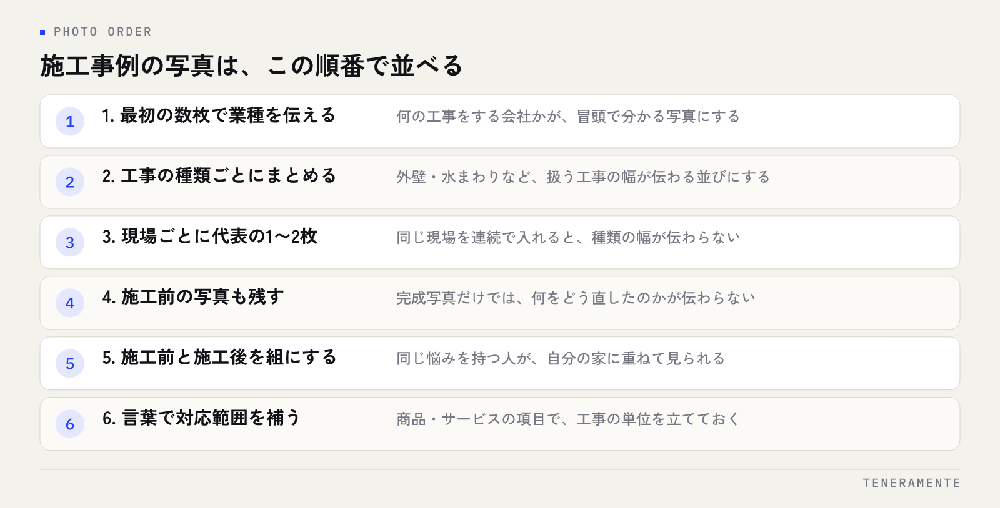

工務店のMEO対策は、飲食店や美容室と同じやり方では空振りします。お客様が店舗に来ない業種だからです。結論から申し上げると、工務店・リフォーム会社のGoogleビジネスプロフィールは、住所ではなく施工エリアと施工事例で勝負が決まります。この2つの設定と見せ方を直すだけで、拾える検索が変わります。
📌 この記事の結論
工務店・リフォーム会社は、来店型ではなく訪問型としてプロフィールを作り直すところから始めてください。施工エリアをサービス提供地域として登録し、カテゴリを実際の受注内容に合わせ、施工事例の写真を工事の種類ごとに並べる。この3点が、地図検索から問い合わせが来るかどうかの分かれ目です。
01工務店のMEO対策は、来店型の店舗とは前提が違う
Googleビジネスプロフィール（GBP）の解説は、ほとんどが来店型の店舗を前提に書かれています。営業時間を正しく入れる、店内の写真を載せる、来店したお客様に口コミをお願いする。この流れは工務店ではそのまま使えません。
工務店・リフォーム会社の場合、検索する人は「近くの事務所」を探していません。探しているのは「自宅まで来てくれる会社」です。つまり地図上のピンの位置より、どこまで施工に行ってくれるのかが判断材料になります。さらに、来店がないので口コミを依頼する接点が少なく、写真も店内ではなく施工後の現場が中心になります。
| 項目 | 来店型の店舗 | 工務店・リフォーム会社 |
|---|---|---|
| 住所の扱い | 来店先として重要 | 非表示にできる。エリア設定が主役 |
| 写真 | 店内・外観・商品 | 施工前後の現場・職人・使用する材料 |
| 口コミの接点 | 来店時・会計時 | 引き渡し後のあいさつ、点検時 |
| 検索される言葉 | 地域名＋業種 | 地域名＋工事の種類（外壁・水まわりなど） |
この違いを押さえないまま来店型の手順をなぞると、「写真を増やしたのに問い合わせが来ない」状態になります。
02施工エリアはサービス提供地域として設定する
GBPには、店舗の住所を出さずに対応エリアだけを表示する設定があります。事務所が自宅兼用だったり、お客様を迎える前提の場所でない場合は、こちらを使います。
設定のコツは、広げすぎないことです。県全体や「東海三県」のように広く入れると、その地域の検索で有利になるわけではありません。Googleは中心となる場所からの距離も見るため、現実に施工に行っている市区町村を具体的に積み上げたほうが、近い地域での表示が安定します。片道で何時間もかかる市を入れておくと、そこからの問い合わせに対応できず、断る手間だけが増えます。
実務では、直近1年の施工先を市区町村で並べ、件数が多い順に登録するのが確実です。これから広げたい地域があるなら、実際に施工した実績が出てから足します。エリアと住所の扱いは後から変えられますが、変更の直後は表示が一時的に不安定になるので、年に何度も触らない前提で決めてください。
先に確かめること
住所を非表示にすると、地図上のピンは出なくなります。事務所にショールームがあり、お客様を迎える運用をしているなら、住所は出したままエリアを併記する形が合います。どちらにするかは、来てもらう場所があるかどうかで決めてください。
03カテゴリの選び方で、拾える検索が変わる
カテゴリは、どの検索で候補に入るかを決める設定です。ここが実際の受注内容とずれていると、他がどれだけ整っていても表示されません。
工務店の場合、「工務店」や「建築業」といった大きなカテゴリをメインに置き、サブカテゴリで実際にやっている工事を足していく形が基本です。リフォーム中心なら、メインを工務店ではなくリフォーム関連にしたほうが実態に合います。注文住宅と水まわりリフォームのどちらも扱っているなら、売上の大きいほうをメインに、もう一方をサブに入れます。
注意したいのは、サブカテゴリを思いつく限り足すやり方です。やっていない工事のカテゴリを入れると、見当違いの問い合わせが増え、断った件数だけが残ります。カテゴリは「対応できる工事」ではなく「受注したい工事」で選んでください。選び方の考え方はGoogleビジネスプロフィールのカテゴリ選びに詳しくまとめています。
04施工事例は、写真の並べ方で伝わり方が変わる
工務店のプロフィールで、いちばん見られるのは写真です。ただ、施工後の完成写真を何十枚も並べても、見る側は何の会社か掴めません。

並べ方には順番があります。最初の数枚で「何の工事をする会社か」が分かるようにし、そのあとに工事の種類ごとのまとまりを作ります。同じ現場の写真を連続で何枚も入れると、種類の幅が伝わらなくなるので、現場ごとに代表の1〜2枚に絞るのが実務的です。
撮り方で押さえたいのは、施工前の写真も残しておくことです。リフォームは、完成写真だけでは何をどう直したのかが伝わりません。施工前と施工後を並べられる状態にしておくと、同じ悩みを持つ人が自分の家に重ねて見られます。写真の選び方はGoogleビジネスプロフィールの写真の選び方にも整理しています。
商品・サービスの登録機能を使えば、「外壁塗装」「浴室の入れ替え」のように工事の単位で項目を立てられます。写真だけでは伝わらない対応範囲を、言葉で補う場所として使ってください。
05口コミが集まりにくい業種での、集め方
来店がない業種は、口コミを頼むタイミングが限られます。だからこそ、どの場面で頼むかを先に決めておく必要があります。
工務店で現実的な接点は3つです。引き渡しのあいさつをするとき、工事後の点検や保証の連絡をするとき、そして追加工事の相談を受けて完了したときです。いずれも担当者が直接お客様と話す場面なので、口頭で一言添えられます。
頼み方は、依頼の文面をあらかじめ用意しておくのが続くやり方です。現場の担当者が自分の言葉で考えると、言いにくさが先に立って頼まなくなります。工事名を入れた短い案内文と、プロフィールの口コミ投稿リンクを1枚にまとめ、引き渡しの書類と一緒に渡す形にしておくと、現場任せになりません。
書いていただいた口コミには返信します。工事の内容に触れた返信は、同じ工事を探している人がそのページを読んだときの判断材料になります。返信の文面を使い回すと、読む側にはすぐ分かるので、工事名と現場の状況を一言ずつ変えてください。
06月に一度の運用チェックリスト
毎日触る必要はありませんが、放置すると情報が古くなり、表示も落ちます。月に一度、次の項目を確認してください。
- 施工エリアの市区町村が、いま実際に行っている範囲と合っているか
- カテゴリが、受注したい工事と合っているか（サブに不要なものが残っていないか）
- 今月の施工現場から、写真を2〜3枚追加したか（施工前と施工後の組で）
- 新しい口コミに返信したか。工事内容に触れた文面になっているか
- 営業時間・休業日（年末年始や工事の繁忙期を含む）が最新か
- 電話番号と問い合わせ先のページが、いま使っているものか
- 商品・サービスの項目が、いま受けている工事と合っているか
- プロフィールの説明文に、対応エリアと主な工事の種類が入っているか
このうち時間がかかるのは写真だけです。現場の担当者がスマートフォンで撮ったものを、月末に1か所へ集める流れを作っておけば、更新は10分で終わります。
07よくある失敗とその避け方
工務店のMEOで止まりやすいのは、次のようなところです。
対応エリアを広く取りすぎる。県全体を登録しても、その県の検索で上に出るわけではありません。遠方からの問い合わせを断る手間が増えるだけなので、施工実績のある市区町村に絞ってください。
完成写真だけを並べる。何の工事をしたのかが分からないままになります。施工前の写真と組にし、現場ごとに代表の1〜2枚に絞ります。
カテゴリを増やしすぎる。やっていない工事のカテゴリを入れると、見当違いの問い合わせが増えます。受注したい工事だけに絞ってください。
口コミを頼む場面を決めていない。来店がない業種では、頼むタイミングを決めないと誰も頼みません。引き渡しと点検の2か所に組み込みます。
設定を頻繁に変える。エリアやカテゴリ、屋号を短い間隔で書き換えると、表示が安定しません。決めたら、少なくとも数か月は様子を見てください。
問い合わせ先が古い。プロフィールから電話が鳴っても、繋がらない番号のままになっている例があります。チェックリストの項目として毎月見てください。
08自分で進める場合と、専門家に任せる場合の分かれ目
一般論として、判断の基準は3つです。
一つ目は、現場の写真を集める流れが社内にあるかどうかです。工務店のMEOで外注しにくいのは、この部分です。写真は現場にいる人しか撮れません。撮って集める習慣があるなら、残りの設定は自社でも進められます。習慣がないなら、まずその流れを作るところから相談したほうが早いです。
二つ目は、設定で止まっているのか、続けることで止まっているのかです。エリアやカテゴリの設定は一度決めれば終わる作業なので、分からない部分だけを単発で教わる形で足ります。逆に、写真の追加や口コミへの返信が毎月止まるなら、続ける部分を外に出す判断が合理的です。
三つ目は、問い合わせの受け方が決まっているかどうかです。地図検索から電話が鳴るようになっても、受ける人や、聞くことが決まっていないと取りこぼします。表示を増やす前に、受け方を整えたほうが結果が残ります。
迷うときは、現状の設定を見てもらって、直すべき点の一覧だけを出してもらう形がもっとも損が少ない進め方です。やることが具体的な作業に分かれれば、自社でやれるものと、やれないものが自然に見えてきます。
09よくある質問
事務所の住所を出さなくても、地図検索に表示されますか？
施工エリアは、何市まで登録できますか？
リフォーム専業でも、カテゴリは工務店にすべきですか？
口コミがまだ1件もありません。先に写真を増やすべきですか？
施工事例はホームページにも載せていますが、両方必要ですか？
10まとめ：工務店のMEOは、エリアと事例で決まる
工務店・リフォーム会社のMEO対策で見るべき場所は多くありません。施工エリアを実績のある市区町村で登録し、カテゴリを受注したい工事に合わせ、施工前と施工後の写真を工事の種類ごとに並べる。そして口コミを頼む場面を引き渡しと点検に組み込む。ここまでやれば、来店型の手順をなぞっていたときとは拾える検索が変わります。
逆に、エリアを広げ、カテゴリを増やし、完成写真だけを足していく形では、何をしている会社なのかが伝わらないまま件数だけが増えます。来店がない業種だからこそ、どこまで行くのかと、何を直せるのかを具体的に出してください。
TENERAMENTEなら、サービス提供地域とカテゴリの設定を実際の施工範囲と受注したい工事に合わせて組み直し、現場の写真を月に一度まとめて追加する流れまで一緒に設計できます。口コミの依頼文と返信の形も用意するので、現場の担当者が言い方に悩む場面がなくなり、毎月止まっていた更新が続くようになります。運用の進め方はMEO/AIO運用代行にまとめていますので、いまの設定を見てほしいという段階でも、お問い合わせからお気軽にご相談ください。